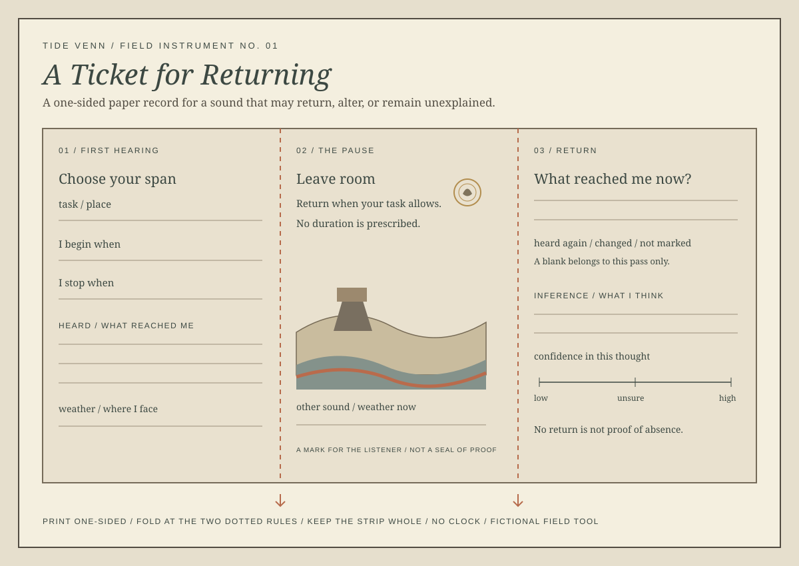

A Ticket for Returning
A one-sided paper record for a sound that may return, alter, or remain unexplained.

Use the ticket
Print one-sided. In the first panel, name a task span by when it begins and ends, then write or draw what reached you. Fold along the dotted rules and return when your task allows. Note weather or other sounds in the middle panel. In the last panel, record what reached you later, then write any inference separately.
A blank belongs to that pass and that position; it does not prove that no sound was there. Keep the strip whole if you want the two records together.
This is an artwork and proposed paper instrument, not a mine-survey tool. The landscape it suggests is invented.